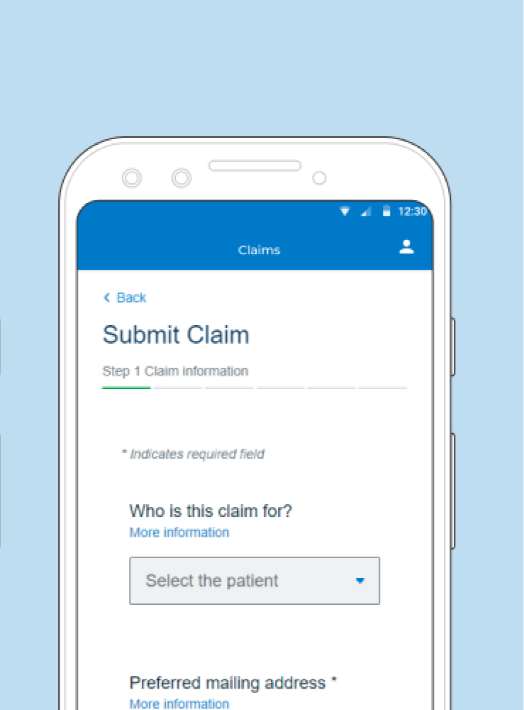
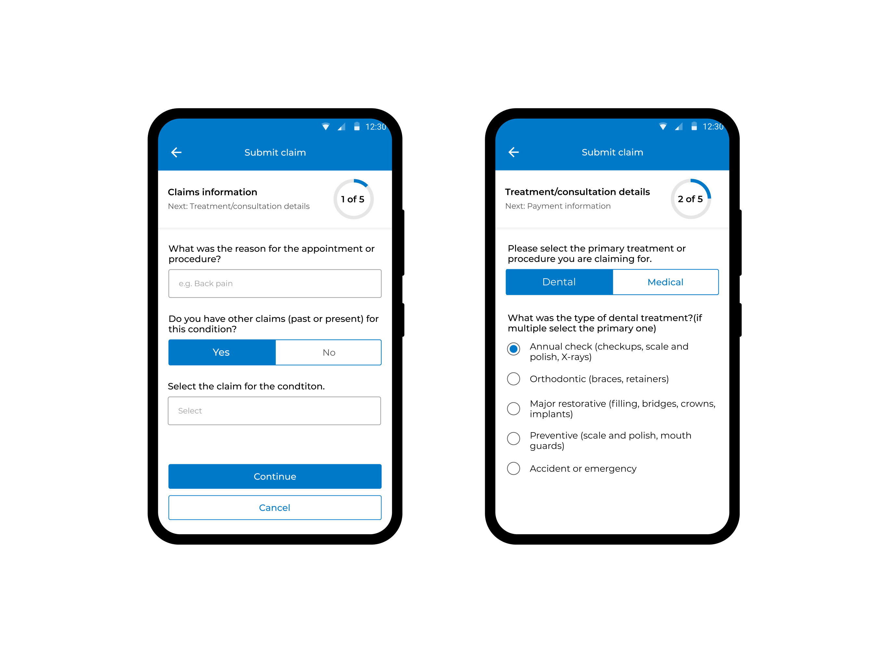

Client project · Infosys
Redesigning healthcare claims for a mobile-first world
Submitting a healthcare claim on mobile should be straightforward. For members of a global health insurance provider, it wasn't — because the experience had been adapted from web without ever being rethought for the hand that holds the phone.
Client project completed at Infosys. Client name withheld. Screens shown are member-facing UI. Proprietary data and internal workflows have been omitted.
The problem
A web-first experience ported to mobile — without being redesigned for it
The claims submission flow had been adapted from a web interface rather than built for mobile from the ground up. The result was a journey full of friction that shouldn't exist on a small screen: long scrolling lists, unoptimised input patterns, and navigation structures that assumed a mouse, not a thumb.
The cognitive load of submitting a claim — already high given the healthcare context — was made worse by an interface that didn't meet users where they were.
Country and currency fields required scrolling through hundreds of options with no smart defaults or pre-fill.
Web-based navigation structures forced users to hold too much context across steps with no clear progress signal.
Input patterns designed for desktop keyboards created unnecessary friction and mistakes on mobile touchscreens.
- Cross-functional collaboration
- End-to-end design
Screens
Before and after the redesign
The redesign focused on two key moments in the claims journey — the overall flow structure and the individual input interactions — transforming both from web-adapted patterns into mobile-native ones.

The original interface shows the hallmarks of a web-first form ported to mobile: a generic Select the patient dropdown, a thin horizontal progress bar with no step context, and a layout that requires scrolling to see the full form. There's no sense of where the user is in the journey or how much is left.

The redesigned flow replaces web patterns with mobile-native ones: a circular progress indicator labels each step and previews what comes next, segmented controls replace dropdowns for binary choices like Dental versus Medical, and radio button lists make treatment selection scannable. Each screen carries only what it needs.
Solution
Mobile-first, from the input up
Rather than refining the existing structure, the redesign rethought each interaction point from the perspective of a member submitting a claim on their phone — often in a hurry, often in a stressful moment.
-
Mobile-optimised input patternsNative mobile controls replaced web-style inputs — reducing keystrokes, minimising error states, and making each field feel like it belongs on a phone rather than a form.
-
Pre-filled fields from location and claim historyCountry and currency now default to the user's location and previous selections, eliminating the need to scroll through long lists entirely.
-
Simplified navigation across the claims journeyThe multi-step flow was restructured around the user's mental model of submitting a claim — with clear progress indicators and fewer decisions per step.
-
Developer-ready specifications and interaction flowsDetailed handoff documentation ensured the design intent survived into build — covering edge cases, error states, and interaction behaviour across device sizes.
Impact
Clarity that converted
The redesigned flow shipped and received direct positive feedback from members — with users specifically calling out the pre-fill behaviour that had previously been one of the biggest pain points in the journey.
"I like it after the latest updates! Pre-filled fields based on your location/previous claims — no scrolling down endless list in country or currency. Well done!"
— Member, post-launch feedback